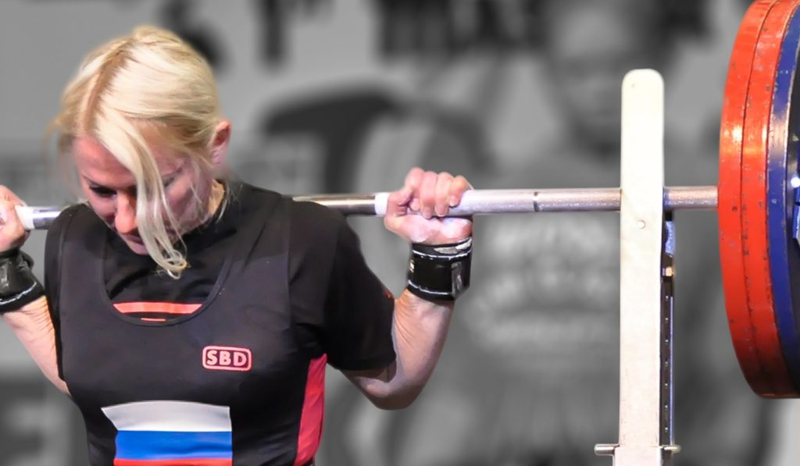
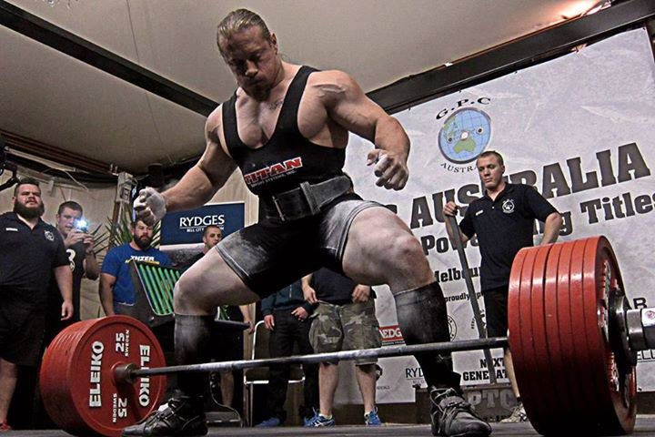
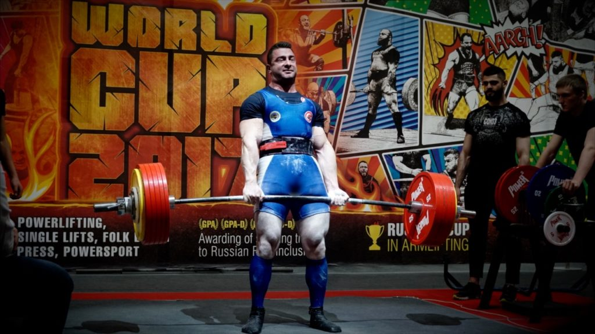

Powerlifting Nedir?
Powerlifting: Squat, bench press ve deadlift olarak adlandırılan 3 büyüklerde, 1 tekrarda maksimum ağırlığı (1rm) kaldırmaya odaklı bir güç sporudur.
Ağırlık olan her yerde uygulanabilmesi, uygulayan sporculara estetik bir fizik sunması, objektif ve keyifli bir spor olması nedeniyle gittikçe popüler hale gelen bu sporda profesyonel ya da amatör olarak ilerlemek istiyorsanız bu yazı sizin için bilmeniz gereken her şeyi içeriyor.

Powerlifting Faydaları
Ağırsağlam’da sık sık güç için çalışmanız gerektiğini duyuyorsunuz. Birçok takipçim bunu powerlifter olmak ile karıştırıyor, ancak ikisi aynı şey değil.
Kas geliştirmek için güçlenmek gerekir. Güçlenmezsek kas geliştiremeyiz, kas geliştiremezsek de iyi bir powerlifter olamayız.
Bu yüzden powerlifter olsak da, olmasak da; ağırlık çalışan bireyler olarak güçlenmeye çalışmalıyız.
Neden güç için çalışmamız gerektiğini de anlarsak, Powerlifting’i anlamamız o kadar kolay olur.
Powerlifting ile vücut geliştirmek çok kolaydır!
Vücut geliştirmek için kas yapmak ve yağ yakmak gerekiyor. Bu yolda spor salonuna gidip ağırlık çalışan insanların en büyük hatası, güç için çalışmayı unutmak. Eğer vücudumuzu güzelleştirmek için ağırlık çalışıyorsak, ağırlık çalışmayı daha iyi yaptığımız zaman, vücudumuz daha da güzel olacak demektir.
Powerlifting de en iyi şekilde ağırlık çalışmayı gerektirir, dolayısıyla powerlifting en iyi şekilde vücut kaslarını büyütmeyi beraberinde getirir!
Zaman zaman kas geliştirmede kullanılan ağırlığın önemli olmadığını duyuyorsunuz, fakat bu oldukça yanlış şekilde ifade edilen bir tavsiye.
Elbette doğru kasları dahil edemeyecek kadar kötü formda çalışıyorsanız ve sürekli güç göstermeye çalışıyorsanız egonuzu bir tarafa bırakmalısınız; fakat doğru formda çalışırken de ağırlıkları hiç zorlamamak, sanki ağırlığın önemi yokmuş gibi davranmak çok büyük hata.
Vücudumuz aynı antrenman tonajına (set x tekrar x ağırlık) en fazla 3 hafta kadar tepki verecektir. Bundan sonra ya aynı ağırlığı düzgün form ile daha çok tekrar kaldırabilmeli, ya da ağırlığı artırmalıyız.
Her iki durum da güçlenmek anlamına geldiği için antrenmanlarda takip etmemiz gereken en önemli şey; ağırlık çalışmasındaki performansımız, yani ağırlıklarımız.
Gücün artması bizim vücudumuzun ağırlık çalışmasına daha iyi adapte olduğumuzu gösterir. Bu da vücudumuzun daha fazla yağ yakması ve daha fazla kas geliştirmesi ile sonuçlanacaktır.
Dolayısıyla powerlifter bakış açısıyla rakamları takip ettiğimiz için iyi şekilde kas geliştiririz.

Powerlifting postürü düzeltir
Güçlü sporcular, aynı zamanda stabil sporculardır.
Postür problemleri güçlü olmaktan değil, zayıf olmaktan kaynaklanır.
Doğru postür, doğru hareket modellerini oturtmak ve bu modellerde eşit şekilde güçlenmekle sağlanır. Dolayısıyla eğer sağlıklı şekilde güç antrenmanı yapıyorsanız, tüm egzersizlerde güçlenmeyi esas alıyorsanız postürünüz de düzelecektir.
Mesela iyi bir maratoncunun, dövüşçünün postürü mükemmel olmayabilir. İyi bir powerlifterin de postürü çok iyi olmayabilir yanlış anlamayın, ama spor olarak powerlifting daha iyi postürü daha çok gerektirir.
Daha Ağır Kaldırmak için Ne Gerekiyor?
İki insandan biri diğerinden daha ağır kaldırıyorsa bunun sebebi aşağıdakilerden biri veya birkaçı olabilir:
Daha fazla kas kütlesi
Daha fazla kas kütlesine sahip olan potansiyel olarak daha ağır kaldırır. Kaslarımız güçlendikçe büyür, büyüdükçe güçlenir. Bu yüzden kas kütlemizi artırmayı hedeflemeliyiz.
Motor öğrenme faktörleri
Egzersizin tekniğini sinir sistemine daha iyi tanıtan daha ağır kaldırır. Güç bir hünerdir. Hüner ise ne kadar çok çalışılırsa o kadar gelişir. Bu yüzden squat, bench press ve deadlifti düzgün formda bolca tekrarlamalıyız.
Vücut tipleri
Egzersizden egzersize farklı olmakla beraber vücut uzuvlarının uzunluğu performansı etkiler. Kolunuzun gövdenize oranı, bacaklarınızın uzunluğu gibi faktörler powerlifting sporunda önemli farklar oluşturur. Bu yüzden vücudumuza en uygun teknikleri keşfedip bolca tekrarlamalıyız.
Kas yapıları
Genetik olarak kaslarımızın başlangıç ve bitiş noktalarının uzunluğu, kas hücrelerimizin yapısı gibi faktörler kaldırdığımız ağırlıkları etkileyebilir.
Motivasyon
Psikolojimiz ve spora bakış açımız da kaldırdığımız ağırlığı etkileyen önemli faktörlerden biridir. Anlık olarak etkili olabildiği gibi, uzun vadede başarılı bir sporcu olmak için de doğru mantalite etkilidir.

Powerlifting Beslenme
Powerlifting beslenmesi oldukça keyiflidir çünkü çok kolaydır.
Podyuma çıkıp vücudunuzu göstermeyeceğiniz için ne kadar kilonuzun olduğu önemli değildir, sadece istediğiniz sikleti belirlemeniz lazım.
Powerlifting sikletleri ve yarışmalarını, benim de başkan yardımcısı olduğum Powerlifting Derneği Resmi Sayfası üzerinden takip edebilirsiniz.
Peki nasıl bir beslenme izlemeliyiz? İdeal sikletimize ulaşmak veya sikletimizi koruyarak performansımızı artırmak için Ağırsağlam’ın sporcu beslenmesi rehberini takip edebilirsiniz!